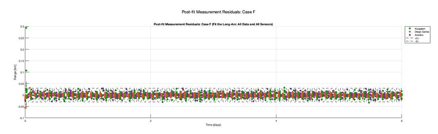
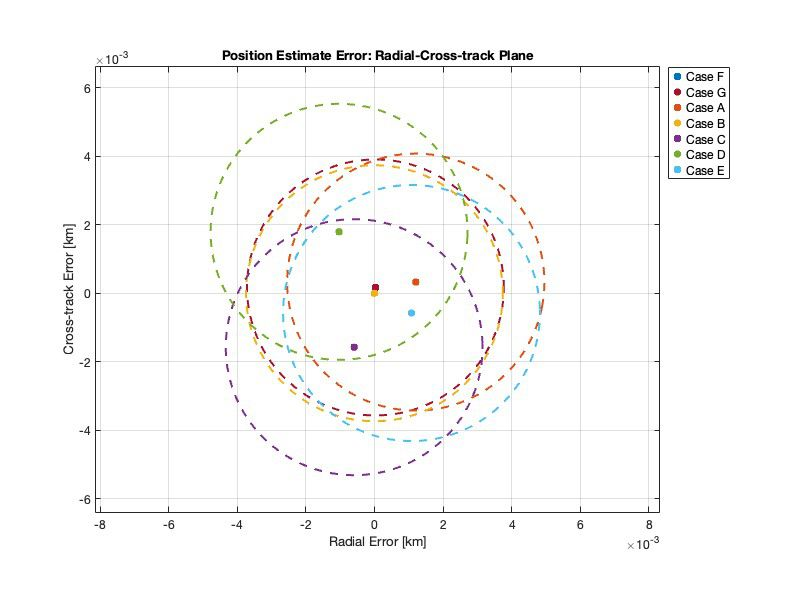
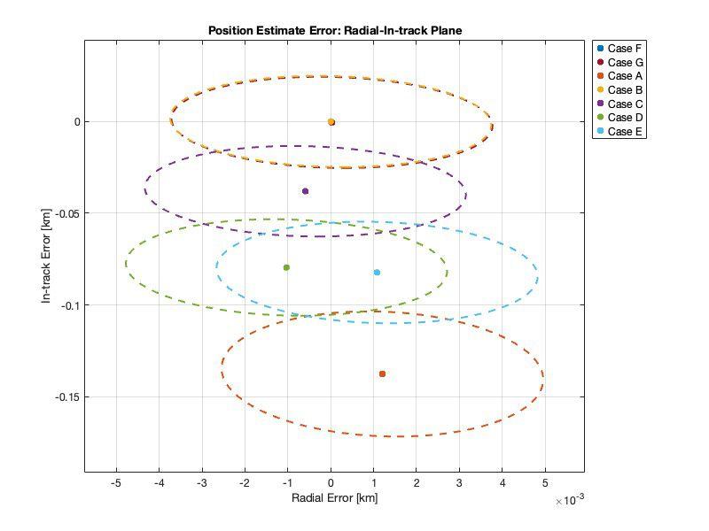

Orbit determination
JahSat-1: EKF/UKF orbit determination
Estimated a satellite's trajectory from simulated range and range-rate data at three stations (Kwajalein, Diego Garcia, Arecibo). Built the filters in stages, from two-body dynamics with ideal measurements up to J2 and realistic station geometry, and tuned process noise with small Monte Carlo runs. Compared EKF and UKF across scenario sweeps (range-only, range-rate-only, per-station) over six days plus a seventh-day prediction, judging them by residuals and by whether the covariance matched the actual RIC error.
Outcome: quantified filter performance by measurement mix and geometry. This project is where my interest in covariance realism started.


